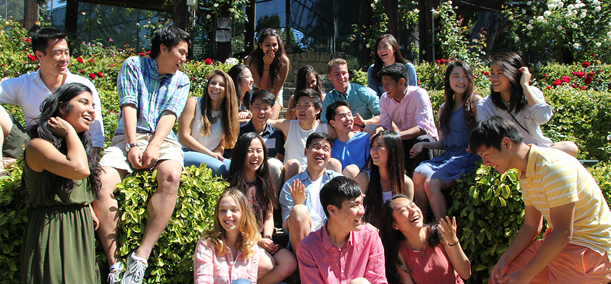

About Isab

ISAB is the largest international students association at the UC Berkeley campus. It was established in 2009 and was nominated as an outstanding student organization in 2010.
ISAB provides a positive intellectual and social atmosphere for students from diverse backgrounds. We host numerous events to promote awareness of international culture to the campus community, whilst strengthening Berkeley's multicultural community.
ISAB has hundreds of general members, and along with our officer team, we have 6 core committees:
Collaborative Events
External Events
International Programs
Marketing Committee
Social Committee
Operations Committee
And our members come from all over the world! Our ISAB family consists of backgrounds that range everything from Egypt, Norway, Tanzania, Mexico to Thailand, India, China, Korea and so much more!
Join the ISAB family for an experience like no other, parties you won't forget, and friends that will last a lifetime.